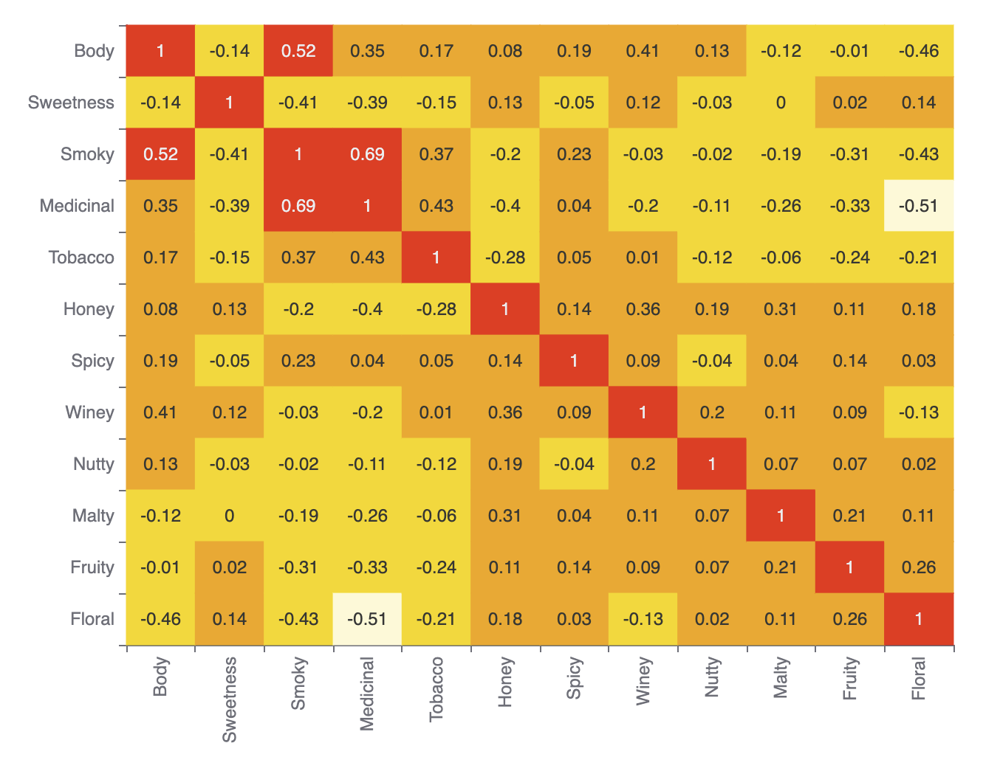
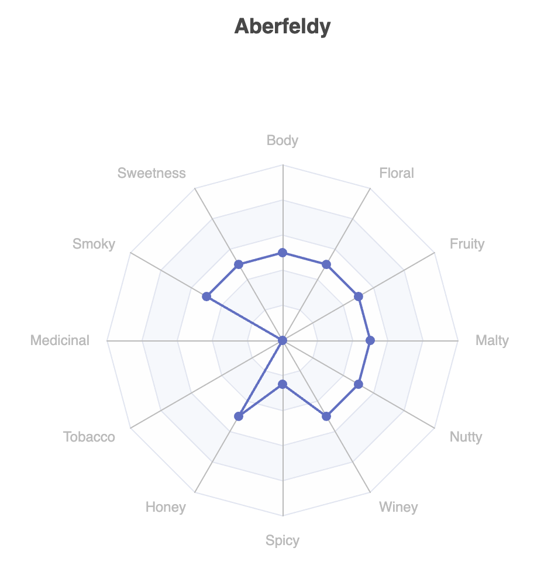
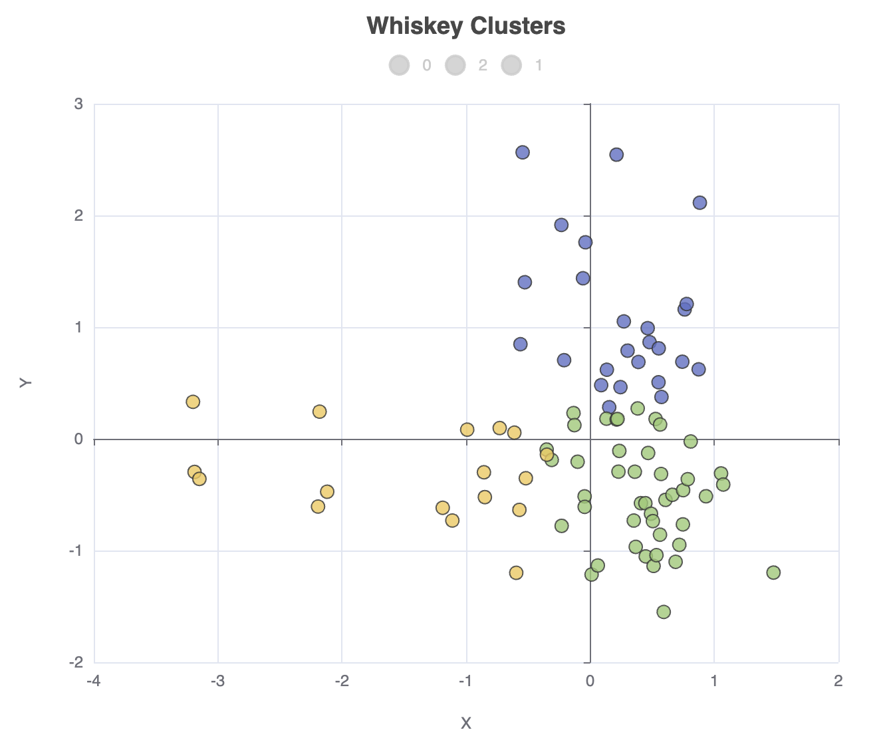

A first look at Underdog
Published: 2025-04-17 10:30PM
|
Let’s explore Whisky profiles using Underdog! |
A relatively new data science library is Underdog. Let’s use it to explore Whiskey profiles. It has many Groovy-powered features delivering a very expressive developer experience.
Underdog sits on top of some well-known data-science libraries like Smile, Tablesaw, and Apache eCharts. If you have used any of those libraries, you’ll recognise parts of the functionality.
First, we’ll load our CSV file:
def file = new File(getClass().classLoader.getResource('whiskey.csv').file)
def df = Underdog.df().read_csv(file.path).drop('RowID')Let’s look at the shape of and schema for the data:
println df.shape()
println df.schema()It gives this output:
86 rows X 13 cols
Structure of whiskey.csv
Index | Column Name | Column Type |
-----------------------------------------
0 | Distillery | STRING |
1 | Body | INTEGER |
2 | Sweetness | INTEGER |
3 | Smoky | INTEGER |
4 | Medicinal | INTEGER |
5 | Tobacco | INTEGER |
6 | Honey | INTEGER |
7 | Spicy | INTEGER |
8 | Winey | INTEGER |
9 | Nutty | INTEGER |
10 | Malty | INTEGER |
11 | Fruity | INTEGER |
12 | Floral | INTEGER |
Let’s look at a correlation matrix plot of the data:
def plot = Underdog.plots()
def features = df.columns - 'Distillery'
plot.correlationMatrix(df[features]).show()Which has this output:

We can also look at the data for any individual distillery using a radar plot. Let’s look at it for row 0:
def data = df[features] as double[][]
plot.radar(
features,
[4] * features.size(),
data[0].toList(),
df['Distillery'][0]
).show()Which has this output:

Let’s now cluster the distilleries using k-means:
def ml = Underdog.ml()
def clusters = ml.clustering.kMeans(data, nClusters: 3)
df['Cluster'] = clusters.toList()
println 'Clusters'
for (int i in clusters.toSet()) {
println "$i:${df[df['Cluster'] == i]['Distillery'].join(', ')}"
}It gives the following output:
Clusters 0:Aberfeldy, Aberlour, Auchroisk, Balmenach, Belvenie, BenNevis, Benrinnes, Benromach, BlairAthol, Dailuaine, Dalmore, Edradour, GlenOrd, Glendronach, Glendullan, Glenfarclas, Glenlivet, Glenrothes, Glenturret, Knochando, Longmorn, Macallan, Mortlach, RoyalLochnagar, Strathisla 1:Ardbeg, Balblair, Bowmore, Bruichladdich, Caol Ila, Clynelish, GlenGarioch, GlenScotia, Highland Park, Isle of Jura, Lagavulin, Laphroig, Oban, OldPulteney, Springbank, Talisker, Teaninich 2:AnCnoc, Ardmore, ArranIsleOf, Auchentoshan, Aultmore, Benriach, Bladnoch, Bunnahabhain, Cardhu, Craigallechie, Craigganmore, Dalwhinnie, Deanston, Dufftown, GlenDeveronMacduff, GlenElgin, GlenGrant, GlenKeith, GlenMoray, GlenSpey, Glenallachie, Glenfiddich, Glengoyne, Glenkinchie, Glenlossie, Glenmorangie, Inchgower, Linkwood, Loch Lomond, Mannochmore, Miltonduff, OldFettercairn, RoyalBrackla, Scapa, Speyburn, Speyside, Strathmill, Tamdhu, Tamnavulin, Tobermory, Tomatin, Tomintoul, Tomore, Tullibardine
Finally, let’s project our data onto 2 dimensions using PCA and plot that as a scatter plot:
def pca = ml.features.pca(data, 2)
def projected = pca.apply(data)
df['X'] = projected*.getAt(0)
df['Y'] = projected*.getAt(1)
plot.scatter(
df['X'],
df['Y'],
df['Cluster'],
'Whiskey Clusters'
).show()The output looks like this:

Further information
Conclusion
We have looked at how to use Underdog.